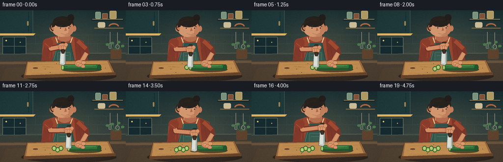
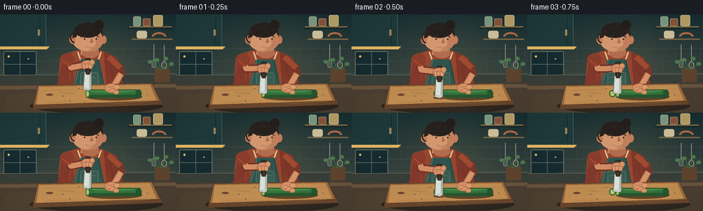
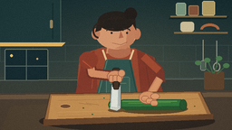
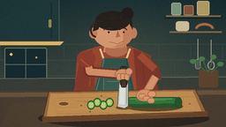

CODING AGENTS AS PIXEL WORLD MODELS
traex/GPT-5.6-Sol · motion_rationality_0012
点击播放 · 原生 RGB 像素
逐轮保存的候选
回放视频、检查图与代码变化。
每份候选均可单独播放。实际图片检查记录在下方工具轨迹中。
候选 01播放与检查图
点击播放 · 原生 RGB 像素


展开代码变化
--- 上一保存版本
+++ 本次保存版本
@@ -0,0 +1,289 @@
+from pathlib import Path
+import math
+import numpy as np
+from PIL import Image, ImageDraw, ImageFilter
+import artifact_io
+
+W, H, N, FPS = 256, 144, 20, 4.0
+SS = 3
+rng = np.random.default_rng(1207)
+
+
+def C(c):
+ return tuple(c)
+
+def pts(seq):
+ return [(round(x*SS), round(y*SS)) for x,y in seq]
+
+def box(b):
+ return tuple(round(v*SS) for v in b)
+
+def line(d, xy, fill, width=1, joint='curve'):
+ d.line(pts(xy), fill=fill, width=max(1, round(width*SS)), joint=joint)
+
+def ellipse(d, b, fill, outline=None, width=1):
+ d.ellipse(box(b), fill=fill, outline=outline, width=max(1, round(width*SS)))
+
+def rr(d, b, r, fill, outline=None, width=1):
+ d.rounded_rectangle(box(b), radius=round(r*SS), fill=fill, outline=outline,
+ width=max(1, round(width*SS)))
+
+def poly(d, xy, fill, outline=None, width=1):
+ d.polygon(pts(xy), fill=fill)
+ if outline:
+ line(d, list(xy)+[xy[0]], outline, width)
+
+def arc(d, b, start, end, fill, width=1):
+ d.arc(box(b), start, end, fill=fill, width=max(1, round(width*SS)))
+
+
+def gradient_bg():
+ yy, xx = np.mgrid[0:H*SS, 0:W*SS]
+ y = yy/(H*SS-1)
+ x = xx/(W*SS-1)
+ top = np.array([25, 47, 50.], dtype=float)
+ bot = np.array([68, 74, 66.], dtype=float)
+ arr = top[None,None,:]*(1-y[:,:,None]) + bot[None,None,:]*y[:,:,None]
+ # Warm pool of pendant light over the cutting area.
+ glow = np.exp(-(((x-.57)/.35)**2 + ((y-.50)/.56)**2)*2.0)[...,None]
+ arr += glow*np.array([18.,14.,6.])
+ return Image.fromarray(np.uint8(np.clip(arr,0,255)), 'RGB')
+
+BG = gradient_bg()
+# fixed fine film texture, stable across frames
+noise_small = rng.normal(0, 1.25, (H, W, 1))
+
+
+def draw_background(im):
+ d = ImageDraw.Draw(im)
+ # tiled backsplash
+ for y in [50, 68, 86]:
+ line(d, [(0,y),(256,y)], (68,89,85), .45)
+ for row, y0 in enumerate([50,68]):
+ off = 0 if row % 2 == 0 else 18
+ for x in range(-off,257,36):
+ line(d, [(x,y0),(x,y0+18)], (66,86,82), .45)
+ # left cabinet with warm under-light
+ rr(d, (-8,-5,67,48), 3, (31,57,58), (86,104,94), .7)
+ line(d, [(58,3),(58,43)], (20,42,43), 1)
+ rr(d, (55,22,58,31), 1, (153,130,85))
+ # right open shelves
+ poly(d, [(188,18),(252,18),(250,21),(186,21)], (20,37,38))
+ line(d, [(188,18),(250,18)], (121,105,73), 2)
+ # jars and bowls
+ rr(d, (194,3,205,17), 2, (120,148,126), (184,188,153), .5)
+ rr(d, (208,6,219,17), 1.5, (130,82,58), (184,152,114), .5)
+ rr(d, (223,1,237,17), 2, (177,155,101), (220,198,145), .5)
+ line(d, [(192,36),(251,36)], (122,103,71), 2)
+ rr(d, (199,24,214,35), 3, (202,188,151))
+ arc(d, (221,26,242,39), 180, 360, (171,103,66), 3)
+ # window / dark evening rectangle
+ rr(d, (5,54,53,91), 2, (22,43,48), (111,121,101), 1)
+ line(d, [(29,55),(29,90)], (87,104,92), 1)
+ line(d, [(6,73),(52,73)], (87,104,92), 1)
+ ellipse(d, (11,60,14,63), (235,191,108))
+ ellipse(d, (40,64,42,66), (212,162,89))
+ # hanging utensils on right
+ line(d, [(239,45),(239,74)], (155,154,133), 1)
+ ellipse(d, (235,69,243,79), None, (147,149,131), 1.2)
+ line(d, [(224,44),(224,71)], (155,154,133), 1)
+ rr(d, (221,67,227,78), 2, (78,91,83), (153,154,134), .8)
+ # under cabinet light strip
+ poly(d, [(0,47),(72,47),(68,51),(0,51)], (222,178,98))
+ # rear counter
+ poly(d, [(0,89),(256,87),(256,107),(0,108)], (55,61,55))
+ line(d, [(0,89),(256,87)], (113,116,98), 1)
+ # plant / herb silhouette at far right
+ rr(d, (225,79,247,99), 2, (93,67,45))
+ for bx,by,ex,ey in [(235,81,229,66),(236,81,242,64),(232,80,219,69),(239,82,250,72)]:
+ line(d, [(bx,by),(ex,ey)], (61,101,68), 1.4)
+ ellipse(d, (ex-4,ey-2,ex+3,ey+3), (75,119,76))
+ # foreground counter
+ poly(d, [(0,103),(256,100),(256,144),(0,144)], (74,61,49))
+ poly(d, [(0,105),(256,102),(256,107),(0,110)], (103,83,61))
+ # a soft static light reflection
+ poly(d, [(12,117),(72,114),(87,144),(1,144)], (79,65,50))
+
+
+def draw_person(d, t, stroke):
+ breathe = math.sin(2*math.pi*t/18.0)*0.45
+ headbob = 0.25*math.sin(2*math.pi*t/12.0)
+ hy = headbob
+ # torso shirt silhouette
+ poly(d, [(94,58+breathe),(113,52+breathe),(148,53+breathe),(170,63+breathe),
+ (178,106),(84,107),(87,69+breathe)], (151,70,47))
+ # shirt seams / folds
+ poly(d, [(91,63),(104,56),(108,104),(83,106)], (130,57,43))
+ poly(d, [(151,55),(169,63),(180,104),(155,103)], (126,55,41))
+ line(d, [(104,68),(101,98)], (177,82,54), .7)
+ line(d, [(160,68),(165,98)], (100,48,40), .7)
+ # neck
+ poly(d, [(119,46+hy),(142,45+hy),(144,59),(117,59)], (202,139,101))
+ ellipse(d, (119,49+hy,144,64), (178,108,78))
+ # head and ears
+ ellipse(d, (105,18+hy,151,54+hy), (211,151,111))
+ ellipse(d, (101,31+hy,110,43+hy), (195,126,91))
+ ellipse(d, (147,31+hy,155,43+hy), (193,124,89))
+ # face shadow, jaw, nose
+ poly(d, [(141,22+hy),(150,31+hy),(147,47+hy),(138,54+hy),(127,53+hy),
+ (139,48+hy)], (194,127,92))
+ poly(d, [(133,34+hy),(136,41+hy),(131,42+hy)], (173,102,75))
+ line(d, [(124,47+hy),(133,49+hy),(140,46+hy)], (132,73,61), .8)
+ # hair mass and small bun/tuft
+ ellipse(d, (108,12+hy,147,34+hy), (38,33,29))
+ ellipse(d, (137,8+hy,151,22+hy), (35,30,27))
+ poly(d, [(108,22+hy),(105,35+hy),(111,33+hy),(116,21+hy),(128,17+hy),
+ (144,22+hy),(150,33+hy),(149,20+hy)], (42,34,29))
+ # ear/hair side curls
+ arc(d, (102,25+hy,115,42+hy), 90, 270, (48,37,31), 2)
+ # brows and downward-looking eyes
+ line(d, [(117,32+hy),(125,31+hy)], (74,47,39), 1)
+ line(d, [(136,31+hy),(143,32+hy)], (74,47,39), 1)
+ arc(d, (117,31+hy,126,38+hy), 195, 345, (48,39,34), 1)
+ arc(d, (135,31+hy,144,38+hy), 195, 345, (48,39,34), 1)
+ ellipse(d, (122,35+hy,124,37+hy), (42,35,31))
+ ellipse(d, (139,35+hy,141,37+hy), (42,35,31))
+ # apron straps and bib
+ line(d, [(113,55),(119,72)], (224,196,145), 2)
+ line(d, [(147,55),(141,72)], (224,196,145), 2)
+ poly(d, [(117,66),(144,66),(153,108),(105,108)], (48,84,77))
+ line(d, [(118,67),(108,106)], (91,125,106), 1)
+ line(d, [(143,67),(151,105)], (29,66,63), 1)
+ rr(d, (117,85,143,104), 2, (54,91,81), (101,128,108), .6)
+ line(d, [(121,92),(139,92)], (102,126,105), .6)
+
+ # holding arm (screen right), behind hand and cucumber
+ # upper arm, bent elbow to wrist
+ line(d, [(158,63),(175,78),(177,91)], (119,55,42), 11)
+ line(d, [(158,62),(175,78)], (160,74,49), 8)
+ line(d, [(176,87),(165,106)], (198,130,92), 9)
+ line(d, [(176,87),(165,106)], (214,148,105), 6)
+
+ # chopping arm changes consistently with the knife hand
+ ky = 11*stroke
+ cutx = 128 + 4*((t+1)//4)
+ wrist = (cutx-1, 73+ky)
+ elbow = (103-2*stroke, 78+3*stroke)
+ line(d, [(98,64),elbow,wrist], (111,50,39), 12)
+ line(d, [(98,63),elbow,wrist], (211,141,100), 8)
+ # sleeve cap to make shoulder joint coherent
+ ellipse(d, (87,57,108,76), (139,61,44))
+ line(d, [(91,67),(102,76)], (180,80,51), 1)
+ return cutx, ky
+
+
+def draw_board_and_food(d, t, cutx, ky, stroke):
+ # cast shadow and cutting board perspective
+ ellipse(d, (43,123,237,145), (46,38,32))
+ poly(d, [(55,104),(221,101),(235,130),(48,136)], (151,103,60), (73,54,38), 1)
+ poly(d, [(48,132),(235,126),(235,132),(48,139)], (102,68,43))
+ poly(d, [(57,106),(218,103),(228,126),(53,132)], (190,139,81))
+ # wood grain and knife marks
+ for y, col in [(111,(160,108,63)),(124,(211,160,96)),(129,(166,111,66))]:
+ line(d, [(64,y),(119,y-1),(173,y+1),(219,y-2)], col, .45)
+ for x in [87,95,181]:
+ line(d, [(x,114),(x+14,116)], (143,94,57), .45)
+ # handle hole
+ ellipse(d, (66,115,78,120), (113,75,47), (217,164,98), .8)
+
+ done = (t+2)//4
+ # small herb flecks add natural detail without moving
+ for x,y in [(101,126),(196,123),(91,119),(214,117),(114,108)]:
+ ellipse(d, (x,y,x+1.5,y+1), (63,91,51))
+
+ # cucumber main body from current cut face to the right
+ bodyx = 127 + 4*done
+ # cucumber cast shadow
+ ellipse(d, (bodyx-2,115,207,126), (91,66,40))
+ rr(d, (bodyx,110,204,122), 5.5, (43,112,58), (27,75,43), 1)
+ # darker underside and glossy top stripe
+ poly(d, [(bodyx+2,118),(201,117),(204,120),(201,122),(bodyx+2,122)], (31,82,45))
+ line(d, [(bodyx+4,112),(195,112)], (88,153,77), 1.1)
+ line(d, [(bodyx+11,114),(188,113)], (121,174,91), .5)
+ ellipse(d, (198,110,206,122), (31,83,46), (24,65,37), .8)
+
+ # completed cucumber rounds fan leftward on board
+ for j in range(done):
+ sx = 124 - j*7
+ sy = 116 + (j%2)*3
+ # thin dark rind behind pale, seeded flesh
+ ellipse(d, (sx-4.5,sy-5,sx+4.5,sy+5), (33,101,48), (24,70,38), .7)
+ ellipse(d, (sx-3.2,sy-3.7,sx+3.2,sy+3.7), (151,191,101))
+ for a in [-1,1]:
+ ellipse(d, (sx+a-0.7,sy-2.2,sx+a+0.5,sy-.4), (215,217,139))
+ ellipse(d, (sx+a-0.7,sy+.3,sx+a+0.5,sy+2.0), (215,217,139))
+
+ # current freshly cut face, partly covered by blade at contact
+ ellipse(d, (bodyx-2.4,111,bodyx+3.4,121.5), (57,129,62), (25,79,40), .8)
+ ellipse(d, (bodyx-1.4,112.3,bodyx+2.4,120.2), (166,198,110))
+
+ # holding hand wraps safely over uncut cucumber, to right of blade
+ hx = max(bodyx+18, 160) + 1.0*math.sin(t*.55)
+ # palm
+ ellipse(d, (hx-8,101,hx+12,115), (211,145,102), (159,94,70), .7)
+ # curled fingers descending toward cucumber
+ for k, yy in enumerate([106,108.5,111]):
+ x0 = hx-5+k*5
+ rr(d, (x0,yy,x0+8,yy+6), 2.8, (218,153,108), (160,96,70), .6)
+ line(d, [(x0+2,yy+4),(x0+6,yy+4.3)], (176,108,78), .45)
+ # thumb
+ ellipse(d, (hx+5,103,hx+15,110), (220,154,109), (159,94,70), .6)
+
+ # knife (drawn last, clearly in front). Vertical blade follows hand.
+ bladey = 82 + ky
+ # blade shadow at contact
+ if stroke > .72:
+ ellipse(d, (cutx-9,120,cutx+10,124), (101,72,43))
+ # steel blade trapezoid
+ poly(d, [(cutx-5,bladey),(cutx+5,bladey+1),(cutx+5,bladey+27),
+ (cutx+1,bladey+30),(cutx-7,bladey+28)], (188,199,196), (63,72,70), .8)
+ # steel gradients/highlight lines
+ poly(d, [(cutx-4,bladey+2),(cutx+2,bladey+3),(cutx+1,bladey+26),
+ (cutx-5,bladey+25)], (220,225,218))
+ line(d, [(cutx-6,bladey+26.8),(cutx+4,bladey+27.8)], (245,238,210), .8)
+ line(d, [(cutx+3,bladey+3),(cutx+3,bladey+24)], (131,145,143), .65)
+ # dark wooden handle
+ rr(d, (cutx-4,64+ky,cutx+4,86+ky), 2, (61,48,38), (30,28,25), .8)
+ ellipse(d, (cutx-2.2,68+ky,cutx+.2,70.5+ky), (193,160,101))
+ ellipse(d, (cutx-2.2,79+ky,cutx+.2,81.5+ky), (193,160,101))
+ # knife hand clenched around handle
+ ellipse(d, (cutx-10,67+ky,cutx+8,80+ky), (214,146,104), (151,90,67), .7)
+ for k in range(3):
+ rr(d, (cutx-8+k*4.4,72+ky,cutx-2.5+k*4.4,80+ky), 2.2,
+ (220,153,109), (157,93,68), .55)
+ ellipse(d, (cutx+2,66+ky,cutx+10,74+ky), (216,149,106), (157,93,68), .6)
+ # visible section of handle below fist
+ rr(d, (cutx-3,79+ky,cutx+3,88+ky), 1.6, (67,50,38), (31,27,23), .7)
+
+
+def render(t):
+ im = BG.copy()
+ draw_background(im)
+ d = ImageDraw.Draw(im)
+ phase = (t % 4)/4.0
+ stroke = (1-math.cos(2*math.pi*phase))/2.0 # high, mid, board, mid
+ cutx, ky = draw_person(d, t, stroke)
+ draw_board_and_food(d, t, cutx, ky, stroke)
+ # small warm edge light around work surface
+ ov = Image.new('RGBA', im.size, (0,0,0,0))
+ od = ImageDraw.Draw(ov)
+ od.ellipse(box((75,88,225,141)), fill=(255,190,85,10))
+ ov = ov.filter(ImageFilter.GaussianBlur(12*SS))
+ im = Image.alpha_composite(im.convert('RGBA'), ov).convert('RGB')
+ im = im.resize((W,H), Image.Resampling.LANCZOS)
+ arr = np.asarray(im).astype(np.float32)
+ arr += noise_small
+ # subtle vignette
+ yy,xx = np.mgrid[0:H,0:W]
+ r = ((xx-W/2)/(W*.72))**2 + ((yy-H/2)/(H*.82))**2
+ arr -= np.clip(r-.36,0,1)[...,None]*9
+ return np.uint8(np.clip(arr,0,255))
+
+
+def main():
+ frames = np.stack([render(t) for t in range(N)], axis=0)
+ artifact_io.save(frames, Path(__file__).resolve().parent)
+ print('saved', frames.shape, frames.dtype)
+
+if __name__ == '__main__':
+ main()
候选 02播放与检查图
点击播放 · 原生 RGB 像素

展开代码变化
--- 上一保存版本
+++ 本次保存版本
@@ -204,7 +204,8 @@
# completed cucumber rounds fan leftward on board
for j in range(done):
- sx = 124 - j*7
+ # Newest round stays next to the advancing cut face; older rounds fan left.
+ sx = bodyx - 5 - j*7
sy = 116 + (j%2)*3
# thin dark rind behind pale, seeded flesh
ellipse(d, (sx-4.5,sy-5,sx+4.5,sy+5), (33,101,48), (24,70,38), .7)
候选 03播放与检查图
可观测工具轨迹
实际执行的命令与返回图片。
命令 1exit 0
/bin/bash -lc "cat prompt.txt && printf '\\n--- GENERATION_RULES ---\\n' && cat GENERATION_RULES.md && printf '\\n--- TASK_SPEC ---\\n' && cat task_spec.json"
命令 2exit 0
/bin/bash -lc "find . -maxdepth 2 -type f -printf '%p\\n' | sort && printf '\\nTools:\\n' && command -v ffmpeg || true && command -v blender || true && command -v python3 || true"
命令 3exit 0
/bin/bash -lc 'cat artifact_io.py'
命令 4exit 0
/bin/bash -lc "cat > generate.py <<'PY'
from pathlib import Path
import math
import numpy as np
from PIL import Image, ImageDraw, ImageFilter
import artifact_io
W, H, N, FPS = 256, 144, 20, 4.0
SS = 3
rng = np.random.default_rng(1207)
def C(c):
return tuple(c)
def pts(seq):
return [(round(x*SS), round(y*SS)) for x,y in seq]
def box(b):
return tuple(round(v*SS) for v in b)
def line(d, xy, fill, width=1, joint='curve'):
d.line(pts(xy), fill=fill, width=max(1, round(width*SS)), joint=joint)
def ellipse(d, b, fill, outline=None, width=1):
d.ellipse(box(b), fill=fill, outline=outline, width=max(1, round(width*SS)))
def rr(d, b, r, fill, outline=None, width=1):
d.rounded_rectangle(box(b), radius=round(r*SS), fill=fill, outline=outline,
width=max(1, round(width*SS)))
def poly(d, xy, fill, outline=None, width=1):
d.polygon(pts(xy), fill=fill)
if outline:
line(d, list(xy)+[xy[0]], outline, width)
def arc(d, b, start, end, fill, width=1):
d.arc(box(b), start, end, fill=fill, width=max(1, round(width*SS)))
def gradient_bg():
yy, xx = np.mgrid[0:H*SS, 0:W*SS]
y = yy/(H*SS-1)
x = xx/(W*SS-1)
top = np.array([25, 47, 50.], dtype=float)
bot = np.array([68, 74, 66.], dtype=float)
arr = top[None,None,:]*(1-y[:,:,None]) + bot[None,None,:]*y[:,:,None]
# Warm pool of pendant light over the cutting area.
glow = np.exp(-(((x-.57)/.35)**2 + ((y-.50)/.56)**2)*2.0)[...,None]
arr += glow*np.array([18.,14.,6.])
return Image.fromarray(np.uint8(np.clip(arr,0,255)), 'RGB')
BG = gradient_bg()
# fixed fine film texture, stable across frames
noise_small = rng.normal(0, 1.25, (H, W, 1))
def draw_background(im):
d = ImageDraw.Draw(im)
# tiled backsplash
for y in [50, 68, 86]:
line(d, [(0,y),(256,y)], (68,89,85), .45)
for row, y0 in enumerate([50,68]):
off = 0 if row % 2 == 0 else 18
for x in range(-off,257,36):
line(d, [(x,y0),(x,y0+18)], (66,86,82), .45)
# left cabinet with warm under-light
rr(d, (-8,-5,67,48), 3, (31,57,58), (86,104,94), .7)
line(d, [(58,3),(58,43)], (20,42,43), 1)
rr(d, (55,22,58,31), 1, (153,130,85))
# right open shelves
poly(d, [(188,18),(252,18),(250,21),(186,21)], (20,37,38))
line(d, [(188,18),(250,18)], (121,105,73), 2)
# jars and bowls
rr(d, (194,3,205,17), 2, (120,148,126), (184,188,153), .5)
rr(d, (208,6,219,17), 1.5, (130,82,58), (184,152,114), .5)
rr(d, (223,1,237,17), 2, (177,155,101), (220,198,145), .5)
line(d, [(192,36),(251,36)], (122,103,71), 2)
rr(d, (199,24,214,35), 3, (202,188,151))
arc(d, (221,26,242,39), 180, 360, (171,103,66), 3)
# window / dark evening rectangle
rr(d, (5,54,53,91), 2, (22,43,48), (111,121,101), 1)
line(d, [(29,55),(29,90)], (87,104,92), 1)
line(d, [(6,73),(52,73)], (87,104,92), 1)
ellipse(d, (11,60,14,63), (235,191,108))
ellipse(d, (40,64,42,66), (212,162,89))
# hanging utensils on right
line(d, [(239,45),(239,74)], (155,154,133), 1)
ellipse(d, (235,69,243,79), None, (147,149,131), 1.2)
line(d, [(224,44),(224,71)], (155,154,133), 1)
rr(d, (221,67,227,78), 2, (78,91,83), (153,154,134), .8)
# under cabinet light strip
poly(d, [(0,47),(72,47),(68,51),(0,51)], (222,178,98))
# rear counter
poly(d, [(0,89),(256,87),(256,107),(0,108)], (55,61,55))
line(d, [(0,89),(256,87)], (113,116,98), 1)
# plant / herb silhouette at far right
rr(d, (225,79,247,99), 2, (93,67,45))
for bx,by,ex,ey in [(235,81,229,66),(236,81,242,64),(232,80,219,69),(239,82,250,72)]:
line(d, [(bx,by),(ex,ey)], (61,101,68), 1.4)
ellipse(d, (ex-4,ey-2,ex+3,ey+3), (75,119,76))
# foreground counter
poly(d, [(0,103),(256,100),(256,144),(0,144)], (74,61,49))
poly(d, [(0,105),(256,102),(256,107),(0,110)], (103,83,61))
# a soft static light reflection
poly(d, [(12,117),(72,114),(87,144),(1,144)], (79,65,50))
def draw_person(d, t, stroke):
breathe = math.sin(2*math.pi*t/18.0)*0.45
headbob = 0.25*math.sin(2*math.pi*t/12.0)
hy = headbob
# torso shirt silhouette
poly(d, [(94,58+breathe),(113,52+breathe),(148,53+breathe),(170,63+breathe),
(178,106),(84,107),(87,69+breathe)], (151,70,47))
# shirt seams / folds
poly(d, [(91,63),(104,56),(108,104),(83,106)], (130,57,43))
poly(d, [(151,55),(169,63),(180,104),(155,103)], (126,55,41))
line(d, [(104,68),(101,98)], (177,82,54), .7)
line(d, [(160,68),(165,98)], (100,48,40), .7)
# neck
poly(d, [(119,46+hy),(142,45+hy),(144,59),(117,59)], (202,139,101))
ellipse(d, (119,49+hy,144,64), (178,108,78))
# head and ears
ellipse(d, (105,18+hy,151,54+hy), (211,151,111))
ellipse(d, (101,31+hy,110,43+hy), (195,126,91))
ellipse(d, (147,31+hy,155,43+hy), (193,124,89))
# face shadow, jaw, nose
poly(d, [(141,22+hy),(150,31+hy),(147,47+hy),(138,54+hy),(127,53+hy),
(139,48+hy)], (194,127,92))
poly(d, [(133,34+hy),(136,41+hy),(131,42+hy)], (173,102,75))
line(d, [(124,47+hy),(133,49+hy),(140,46+hy)], (132,73,61), .8)
# hair mass and small bun/tuft
ellipse(d, (108,12+hy,147,34+hy), (38,33,29))
ellipse(d, (137,8+hy,151,22+hy), (35,30,27))
poly(d, [(108,22+hy),(105,35+hy),(111,33+hy),(116,21+hy),(128,17+hy),
(144,22+hy),(150,33+hy),(149,20+hy)], (42,34,29))
# ear/hair side curls
arc(d, (102,25+hy,115,42+hy), 90, 270, (48,37,31), 2)
# brows and downward-looking eyes
line(d, [(117,32+hy),(125,31+hy)], (74,47,39), 1)
line(d, [(136,31+hy),(143,32+hy)], (74,47,39), 1)
arc(d, (117,31+hy,126,38+hy), 195, 345, (48,39,34), 1)
arc(d, (135,31+hy,144,38+hy), 195, 345, (48,39,34), 1)
ellipse(d, (122,35+hy,124,37+hy), (42,35,31))
ellipse(d, (139,35+hy,141,37+hy), (42,35,31))
# apron straps and bib
line(d, [(113,55),(119,72)], (224,196,145), 2)
line(d, [(147,55),(141,72)], (224,196,145), 2)
poly(d, [(117,66),(144,66),(153,108),(105,108)], (48,84,77))
line(d, [(118,67),(108,106)], (91,125,106), 1)
line(d, [(143,67),(151,105)], (29,66,63), 1)
rr(d, (117,85,143,104), 2, (54,91,81), (101,128,108), .6)
line(d, [(121,92),(139,92)], (102,126,105), .6)
# holding arm (screen right), behind hand and cucumber
# upper arm, bent elbow to wrist
line(d, [(158,63),(175,78),(177,91)], (119,55,42), 11)
line(d, [(158,62),(175,78)], (160,74,49), 8)
line(d, [(176,87),(165,106)], (198,130,92), 9)
line(d, [(176,87),(165,106)], (214,148,105), 6)
# chopping arm changes consistently with the knife hand
ky = 11*stroke
cutx = 128 + 4*((t+1)//4)
wrist = (cutx-1, 73+ky)
elbow = (103-2*stroke, 78+3*stroke)
line(d, [(98,64),elbow,wrist], (111,50,39), 12)
line(d, [(98,63),elbow,wrist], (211,141,100), 8)
# sleeve cap to make shoulder joint coherent
ellipse(d, (87,57,108,76), (139,61,44))
line(d, [(91,67),(102,76)], (180,80,51), 1)
return cutx, ky
def draw_board_and_food(d, t, cutx, ky, stroke):
# cast shadow and cutting board perspective
ellipse(d, (43,123,237,145), (46,38,32))
poly(d, [(55,104),(221,101),(235,130),(48,136)], (151,103,60), (73,54,38), 1)
poly(d, [(48,132),(235,126),(235,132),(48,139)], (102,68,43))
poly(d, [(57,106),(218,103),(228,126),(53,132)], (190,139,81))
# wood grain and knife marks
for y, col in [(111,(160,108,63)),(124,(211,160,96)),(129,(166,111,66))]:
line(d, [(64,y),(119,y-1),(173,y+1),(219,y-2)], col, .45)
for x in [87,95,181]:
line(d, [(x,114),(x+14,116)], (143,94,57), .45)
# handle hole
ellipse(d, (66,115,78,120), (113,75,47), (217,164,98), .8)
done = (t+2)//4
# small herb flecks add natural detail without moving
for x,y in [(101,126),(196,123),(91,119),(214,117),(114,108)]:
ellipse(d, (x,y,x+1.5,y+1), (63,91,51))
# cucumber main body from current cut face to the right
bodyx = 127 + 4*done
# cucumber cast shadow
ellipse(d, (bodyx-2,115,207,126), (91,66,40))
rr(d, (bodyx,110,204,122), 5.5, (43,112,58), (27,75,43), 1)
# darker underside and glossy top stripe
poly(d, [(bodyx+2,118),(201,117),(204,120),(201,122),(bodyx+2,122)], (31,82,45))
line(d, [(bodyx+4,112),(195,112)], (88,153,77), 1.1)
line(d, [(bodyx+11,114),(188,113)], (121,174,91), .5)
ellipse(d, (198,110,206,122), (31,83,46), (24,65,37), .8)
# completed cucumber rounds fan leftward on board
for j in range(done):
sx = 124 - j*7
sy = 116 + (j%2)*3
# thin dark rind behind pale, seeded flesh
ellipse(d, (sx-4.5,sy-5,sx+4.5,sy+5), (33,101,48), (24,70,38), .7)
ellipse(d, (sx-3.2,sy-3.7,sx+3.2,sy+3.7), (151,191,101))
for a in [-1,1]:
ellipse(d, (sx+a-0.7,sy-2.2,sx+a+0.5,sy-.4), (215,217,139))
ellipse(d, (sx+a-0.7,sy+.3,sx+a+0.5,sy+2.0), (215,217,139))
# current freshly cut face, partly covered by blade at contact
ellipse(d, (bodyx-2.4,111,bodyx+3.4,121.5), (57,129,62), (25,79,40), .8)
ellipse(d, (bodyx-1.4,112.3,bodyx+2.4,120.2), (166,198,110))
# holding hand wraps safely over uncut cucumber, to right of blade
hx = max(bodyx+18, 160) + 1.0*math.sin(t*.55)
# palm
ellipse(d, (hx-8,101,hx+12,115), (211,145,102), (159,94,70), .7)
# curled fingers descending toward cucumber
for k, yy in enumerate([106,108.5,111]):
x0 = hx-5+k*5
rr(d, (x0,yy,x0+8,yy+6), 2.8, (218,153,108), (160,96,70), .6)
line(d, [(x0+2,yy+4),(x0+6,yy+4.3)], (176,108,78), .45)
# thumb
ellipse(d, (hx+5,103,hx+15,110), (220,154,109), (159,94,70), .6)
# knife (drawn last, clearly in front). Vertical blade follows hand.
bladey = 82 + ky
# blade shadow at contact
if stroke > .72:
ellipse(d, (cutx-9,120,cutx+10,124), (101,72,43))
# steel blade trapezoid
poly(d, [(cutx-5,bladey),(cutx+5,bladey+1),(cutx+5,bladey+27),
(cutx+1,bladey+30),(cutx-7,bladey+28)], (188,199,196), (63,72,70), .8)
# steel gradients/highlight lines
poly(d, [(cutx-4,bladey+2),(cutx+2,bladey+3),(cutx+1,bladey+26),
(cutx-5,bladey+25)], (220,225,218))
line(d, [(cutx-6,bladey+26.8),(cutx+4,bladey+27.8)], (245,238,210), .8)
line(d, [(cutx+3,bladey+3),(cutx+3,bladey+24)], (131,145,143), .65)
# dark wooden handle
rr(d, (cutx-4,64+ky,cutx+4,86+ky), 2, (61,48,38), (30,28,25), .8)
ellipse(d, (cutx-2.2,68+ky,cutx+.2,70.5+ky), (193,160,101))
ellipse(d, (cutx-2.2,79+ky,cutx+.2,81.5+ky), (193,160,101))
# knife hand clenched around handle
ellipse(d, (cutx-10,67+ky,cutx+8,80+ky), (214,146,104), (151,90,67), .7)
for k in range(3):
rr(d, (cutx-8+k*4.4,72+ky,cutx-2.5+k*4.4,80+ky), 2.2,
(220,153,109), (157,93,68), .55)
ellipse(d, (cutx+2,66+ky,cutx+10,74+ky), (216,149,106), (157,93,68), .6)
# visible section of handle below fist
rr(d, (cutx-3,79+ky,cutx+3,88+ky), 1.6, (67,50,38), (31,27,23), .7)
def render(t):
im = BG.copy()
draw_background(im)
d = ImageDraw.Draw(im)
phase = (t % 4)/4.0
stroke = (1-math.cos(2*math.pi*phase))/2.0 # high, mid, board, mid
cutx, ky = draw_person(d, t, stroke)
draw_board_and_food(d, t, cutx, ky, stroke)
# small warm edge light around work surface
ov = Image.new('RGBA', im.size, (0,0,0,0))
od = ImageDraw.Draw(ov)
od.ellipse(box((75,88,225,141)), fill=(255,190,85,10))
ov = ov.filter(ImageFilter.GaussianBlur(12*SS))
im = Image.alpha_composite(im.convert('RGBA'), ov).convert('RGB')
im = im.resize((W,H), Image.Resampling.LANCZOS)
arr = np.asarray(im).astype(np.float32)
arr += noise_small
# subtle vignette
yy,xx = np.mgrid[0:H,0:W]
r = ((xx-W/2)/(W*.72))**2 + ((yy-H/2)/(H*.82))**2
arr -= np.clip(r-.36,0,1)[...,None]*9
return np.uint8(np.clip(arr,0,255))
def main():
frames = np.stack([render(t) for t in range(N)], axis=0)
artifact_io.save(frames, Path(__file__).resolve().parent)
print('saved', frames.shape, frames.dtype)
if __name__ == '__main__':
main()
PY
python3 generate.py
ls -lh pixels.npz index.html inspection.png frames/00.png frames/19.png"命令 5exit 0
/bin/bash -lc "python3 generate.py && python3 - <<'PY'
from pathlib import Path
import json, numpy as np
from PIL import Image
p=Path('.')
s=json.loads((p/'task_spec.json').read_text())
z=np.load(p/'pixels.npz')['pixels']
files=sorted((p/'frames').glob('*.png'))
assert z.shape==(s['height'],s['width'],s['frames'])
assert len(files)==s['frames']
for f in files:
im=Image.open(f)
assert im.mode=='RGB' and im.size==(s['width'],s['height'])
# Frame difference ensures visible but controlled motion.
a=np.stack([np.asarray(Image.open(f),dtype=np.int16) for f in files])
d=np.abs(np.diff(a,axis=0)).mean(axis=(1,2,3))
print('validation OK:', len(files), 'RGB frames', files[0].name, 'to', files[-1].name)
print('mean adjacent pixel deltas:', np.round(d,2).tolist())
print('artifacts:', [(x.name,x.stat().st_size) for x in [p/'pixels.npz',p/'index.html',p/'inspection.png',p/'transition_check.png']])
PY"视觉工具实际返回图片 1

视觉工具实际返回图片 2

视觉工具实际返回图片 3

视觉工具实际返回图片 4

保存候选 3 份；完成命令 5 次；可验证图片返回 4 张。原始 API 响应与完整日志保留在本地。